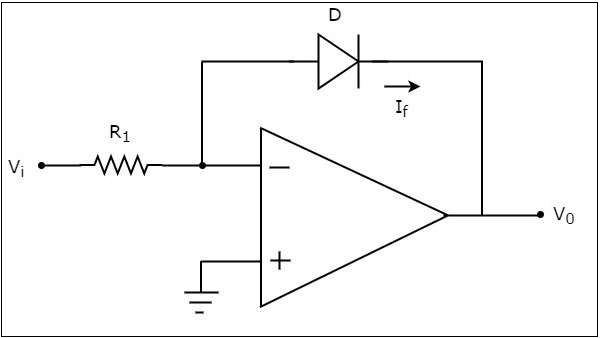
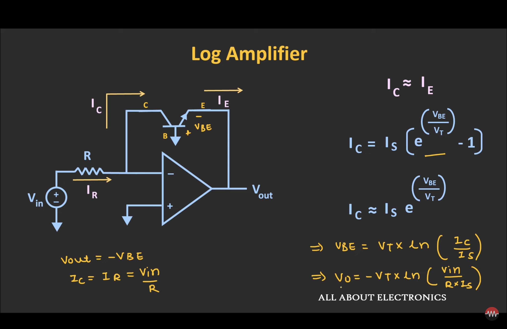
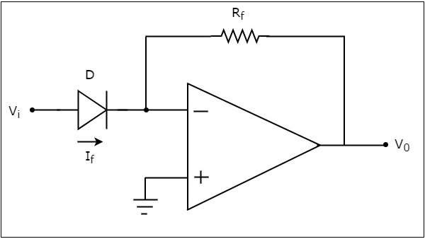
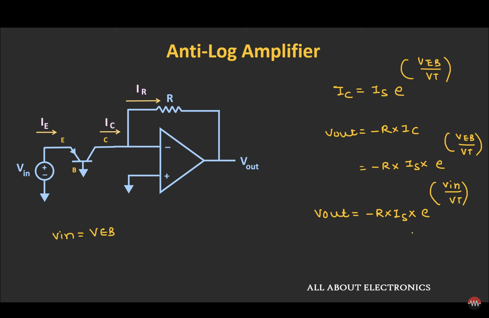
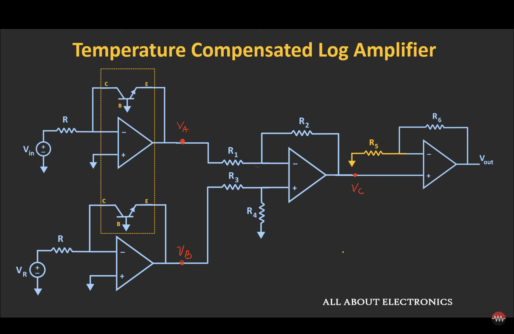

Log and Anti-Log Amplifiers#
Author : Negar Bahrampour
Contact : negarbahram03@gmail.com
Introduction#
Logarithmic (log) and anti-logarithmic (anti-log) amplifiers are essential components in analog electronics. These circuits exploit the exponential relationship between voltage and current in semiconductor devices, specifically in diodes and transistors. They are widely used in applications such as signal processing, computation, and instrumentation. This paper delves into the principles, design, and applications of log and anti-log amplifiers, highlighting their operational intricacies and practical significance.
Circuit Design and Operation#
Logarithmic Amplifiers#
An op-amp based logarithmic amplifier produces a voltage at the output, which is proportional to the logarithm of the voltage applied to the resistor connected to its inverting terminal. The circuit diagram of an op-amp based logarithmic amplifier is shown in the following figure :

In the above circuit, the non-inverting input terminal of the op-amp is connected to ground. That means zero volts is applied at the non-inverting input terminal of the op-amp.
According to the virtual short concept, the voltage at the inverting input terminal of an op-amp will be equal to the voltage at its non-inverting input terminal. So, the voltage at the inverting input terminal will be zero volts.
The nodal equation at the inverting input terminal’s node is :
The following is the equation for current flowing through a diode, when it is in forward bias :
where,
\( I_{s} \) is the saturation current of the diode,
\( V_{f} \) is the voltage drop across diode, when it is in forward bias,
\( V_{T} \) is the diode’s thermal equivalent voltage.
The KVL equation around the feedback loop of the op amp will be :
Substituting the value of Vf in Equation 2, we get:
Observe that the left hand side terms of both equation 1 and equation 3 are same. Hence, equate the right hand side term of those two equations as shown below :
Applying natural logarithm on both sides, we get :
Note that in the above equation, the parameters \( n \), \( V_{T} \) and \( I_{s} \) are constants. So, the output voltage \( V_{o} \) will be proportional to the natural logarithm of the input voltage \( V_{i} \) for a fixed value of resistance \( R_1 \).
Therefore, the op-amp based logarithmic amplifier circuit discussed above will produce an output, which is proportional to the natural logarithm of the input voltage \( V_{T} \), when \( R_1I_{s} = 1V \).
Observe that the output voltage \( V_{o} \) has a negative sign, which indicates that there exists a \( 180 \degree \) phase difference between the input and the output.
Trans-diode Configurtion#

Anti-Logarithmic Amplifiers#
An op-amp based anti-logarithmic amplifier produces a voltage at the output, which is proportional to the anti-logarithm of the voltage that is applied to the diode connected to its inverting terminal.
The circuit diagram of an op-amp based anti-logarithmic amplifier is shown in the following figure :

In the circuit shown above, the non-inverting input terminal of the op-amp is connected to ground. It means zero volts is applied to its non-inverting input terminal.
According to the virtual short concept, the voltage at the inverting input terminal of op-amp will be equal to the voltage present at its non-inverting input terminal. So, the voltage at its inverting input terminal will be zero volts.
The nodal equation at the inverting input terminal’s node is :
We know that the equation for the current flowing through a diode, when it is in forward bias, is as given below :
Substituting the value of If in Equation 4, we get :
The KVL equation at the input side of the inverting terminal of the op amp will be :
Substituting, the value of \( V_{f} \) in the Equation 5, we get :
Note that, in the above equation the parameters \( n \), \( V_{T} \) and \( I_{s} \) are constants. So, the output voltage \( V_{o} \) will be proportional to the anti-natural logarithm (exponential) of the input voltage \( V_{i} \), for a fixed value of feedback resistance \( R_{f} \).
Therefore, the op-amp based anti-logarithmic amplifier circuit discussed above will produce an output, which is proportional to the anti-natural logarithm (exponential) of the input voltage \( V_{i} \) when, \( R_{f}I_{s} = 1V \).
Observe that the output voltage \( V_{o} \) is having a negative sign, which indicates that there exists a \( 180\degree \) phase difference between the input and the output.
Trans-diode Configurtion#

Diode VS Transistor#
BJTs offer several advantages when used in a log amplifier. They can handle larger currents compared to diodes, making them suitable for a broader range of applications. Transistor circuits also provide greater flexibility, allowing for additional design modifications such as the use of differential pairs to enhance accuracy. Furthermore, the gain of the amplifier can be fine-tuned by adjusting the collector resistance or incorporating external circuitry, enabling more precise control over the amplifier’s performance.
Temperature Compensated Log Amplifier#

How this circuit works and using this circuit how we can compensate the effect of temperature on the output voltage? In this circuit, instead of single log amplifier, the two log amplifiers have been used. In the first log amplifier, the input voltage is given, while in the second log amplifier some reference voltage has been given and also in this two log amplifiers, the matched pair of transistors are used. It means that both transistors have same thermal voltage and the same reverse saturation current.
But still, this output voltage depends upon this thermal voltage. Using the third block we can eliminate the effect of this thermal voltage. Resistor R5 is the temperature dependent resistor. So, with temperature, the value of this resistor \( R_{5} \) will change. Now if we select the temperature coefficient of resistance for this \( R_{5} \) in a such a way that it can nullify the effect if this Vt. And in a way, we can nullify the effect of temperature from this log amplifier circuit.
Conclusion#
Log and anti-log amplifiers are pivotal in modern analog electronics, offering unique functionalities for signal manipulation and computation. By leveraging the exponential properties of semiconductor devices, these circuits enable diverse applications, from audio processing to scientific instrumentation. Despite challenges like temperature sensitivity, advancements in circuit design continue to enhance their reliability and performance.
Sources#
The Art of Electronics by Horowitz and Hill.
Tutorials Point Website
ALL ABOUT ELECTRONICS YouTube Channel